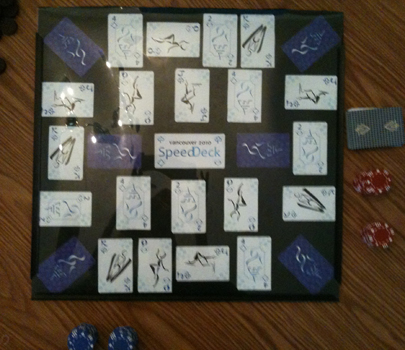
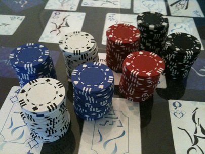
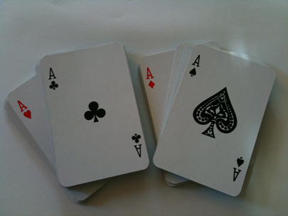
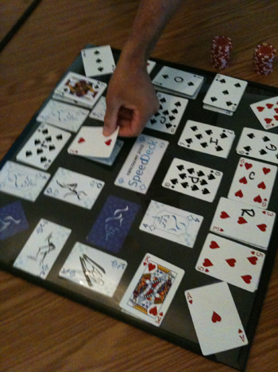
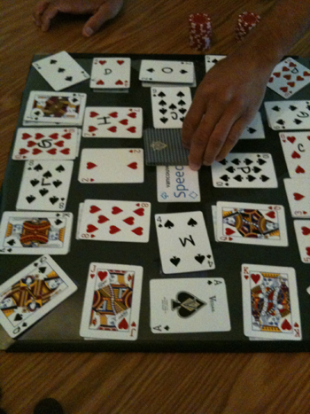
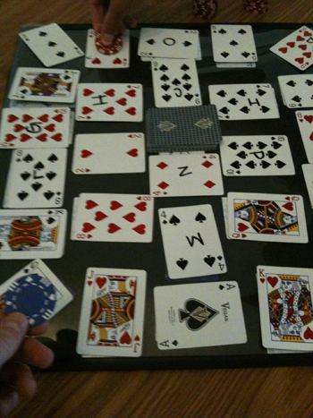
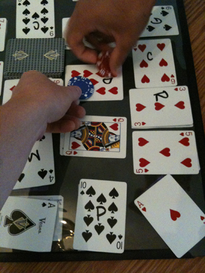
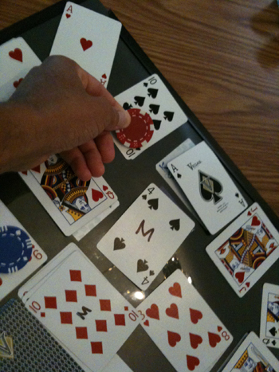

Instruction Manual
How SpeedDeck Works?
What's Included?

- Instruction Manual
- 104 Colored Chips (4 colors. A set of 26 chips for each color. Red, White, Blue & Black).
- One Deck of 52 Playing Cards (Jokers and Wild Cards removed).
- 20 wooden "Foul" Chips.
- 2 x 2 feet SpeedDeck Game Board.
Quick Play Guide
Step 1 | SpeedDeck Game Board
- Place SpeedDeck game board on surface
- (2.5'x2.5' bar table is ideal)
- Card Placeholders – are the cards drawn on the SpeedDeck Game Board.
- Get cards
- Create 4 piles per Suite
- (i.e. Hearts, Clubs, Diamonds, Spades)
- Shuffle the ♥ Hearts & ♣ Clubs (26 cards)
- Shuffle the ♦ Diamonds & ♠ Spades (26 cards)
- Take one set of 26 cards.
- Place one card atop each Card Placeholder on the Game Board randomly.
- Place remaining set of 26 cards in the center of the Game Board as Draw Pile.
- Card Values:
- 5 points per number card (2-10)
- 10 points per J, K and Q
- 15 points per ACE
- One bag of colored chips per player.
- Wooden Chips = Foul Chips = -5 ponts.
- Chips given if a player places their color chip on the wrong card.
- Players must have one chip in hand with hand under the table before each turn.
- Rotate clockwise between players quickly flipping the top card aff the Draw Pile.
- Place the card next to the Draw Pile in the middle of the Game Board.
- The first person to find and place their chip on the card with the same color and value as the one flipped from the Draw Pile wins the card.
- Leave the winning chip on top of the card until end of round.
- At the end of each round total and keep track of individual scores.
- 2 Players = 2 Rounds
- 3 Players = 3 Rounds
- 4 Players = 4 Rounds
- The player receives one foul chip (- 5 points)
- Two or more players place their chip down on card in play at the same time.
- One player must flip a card from the draw.
- The players who tied will play this turn has the tiebreaker.
- Winner receivers the Playoff card + Tiebreaker card points.
Detailed Rules of Play
- Players must start with their current chip in play under the table.
- No hovering over the SpeedDeck game board. Player’s hands must be in one of two positions 1) under the table or 2) placing their chip on a card.
- If a player put their chip on the wrong card they cannot play the next card (loosing one turn) and receives a foul chip worth negative five (-5) points.
- Each turn one card is removed from SpeedDeck draw pile and placed face up beside it.
- To win the card, players must find and be the first to place their current chip in play on the card with the same color and value located on the SpeedDeck game board.
- The winner places his current chip in play on the card he just won.
- When a card is flipped over from the SpeedDeck draw pile, and everyone rushes in to place their chip on the winning card for that turn, the player whose chip is the lowest (closest) to the game board wins the turn.
- If there is a tie between players they will enter into a tiebreaker round. A player not involved in the tie must flip one more card from the SpeedDeck draw pile. Only players who tied can compete in the playoff. Whoever wins this playoff gets both the playoff card points and the tiebreaker card points.
- Each round ends once all cards have been flipped from the SpeedDeck draw pile and players have captured all cards on the game board.
- Total each player’s score at the end of each round by adding up the value of each card, which they won, minus foul points.
- Repeat this process for all remaining rounds totaling a player’s score for all rounds to determine overall game winner(s).
The Game Walkthrough
- Give each player one set of colored chips
 - Get cards and create 4 piles per Suite (i.e ♥, ♣, ♦, ♠)
 - Shuffle the ♥ & ♣ (26 cards)
- Shuffle the ♦ & ♠ (26 cards)
- Take one set of 26 cards and place one card atop each Card Placeholder on the Game Board.
 - Place remaining set of 26 cards in the center of the Game Board as Draw Pile
 - With players on either 4 sides of the Game Board, each players should have a chip in hand underneath the table ready.
- Rotate clockwise between players quickly flipping the top card aff the Draw Pile.
- Place the card next to the Draw Pile in the middle of the Game Board (in this case a Red 4 is drawn worth +5 points.)
- The first person to find and place their chip on the card with the same color and value as the one flipped from the Draw Pile wins the card. As seen below, in this case, red wins the first draw 1 out of 26.
 - Leave the winning chip on top of the card until the end of round (i.e. all 26 playing cards are won and covered by a players chip.)
- Going clockwise, the next player flips card 2 of 26 from the Draw Pile (in this case a Red 9 is drawn worth +5 points.)
- This time both Blue and Red place their chips down at the same time, resulting in a tie. Both players will now enter a Tiebreaker round.
 - For the tiebreaker one more card (3 of 26) is drawn from the Draw Pile (the Black Queen) and the winner of this turn will win both the tiebreaker card and the card which the tie resulted on (in this case blue wins, earning him +5 points for the Red 9 card and +10 points for the Black Queen.)
- Card 4 of 26 is drawn, a Red 10, and red player accidently places his red chip on the Black 10. This earns him a wooded "Foul" chip worth -5 points.
 - The blue player correctly places his chip on the Red 10 and earns +5 points.
- Card 5 of 26 is drawn next and the blue players wins the Red Queen worth +10 points
- This process continues for all 26 cards and once all have been won the total points earn for each player is tallied (in this case Red earned 75 total points minus 5 point from his earlier "Foul", given him a total of 70 points and Blue earned 100 points with no "Foul", winner the round by 30 points!>
- These two players play one more round and then add their points to the first round to determine the overall winner of the the game (in this case the red player earned a total of 145 points while Blue earned 190 points minus 10 points for 2 "Fouls".